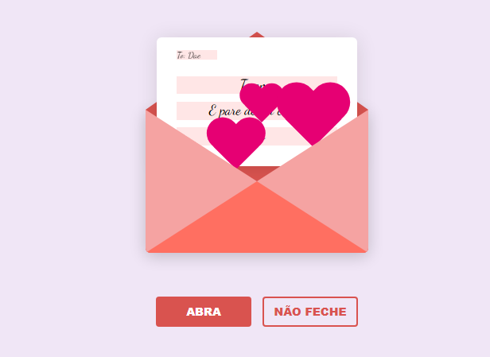
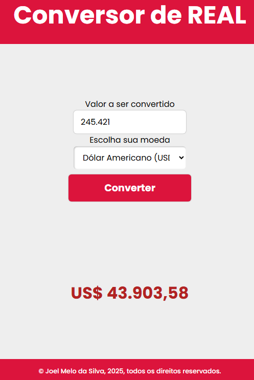

Minha História
👋 Olá! Sou Joel Melo da Silva, um apaixonado desenvolvedor Front-end que transforma ideias em experiências digitais incríveis.
🚀 Minha jornada no desenvolvimento web é movida pela curiosidade e pelo desejo constante de criar interfaces que não apenas funcionem, mas que também encantem os usuários. Trabalho com JavaScript, HTML, CSS e React, sempre buscando a combinação perfeita entre design e funcionalidade.
📊 Além do código, sou certificado em Power BI e adoro mergulhar no mundo dos dados, criando dashboards que transformam números em insights valiosos. Esta combinação única de habilidades me permite criar soluções completas que vão além do visual.
🎯 Meu objetivo? Contribuir para projetos desafiadores onde possa aplicar minha criatividade e conhecimento técnico para resolver problemas reais. Estou sempre em busca de novas tecnologias e melhores práticas para entregar resultados excepcionais.
💡 Quando não estou codando, você pode me encontrar explorando novas tecnologias, compartilhando conhecimento com a comunidade dev ou aperfeiçoando minhas habilidades em UX/UI.
Habilidades
Projetos em Destaque

